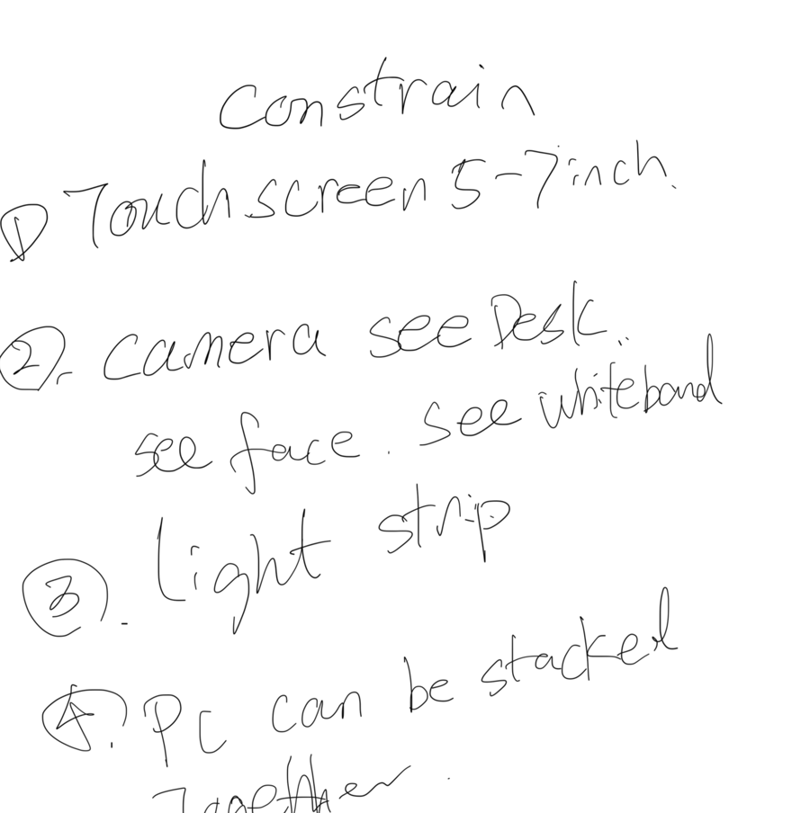
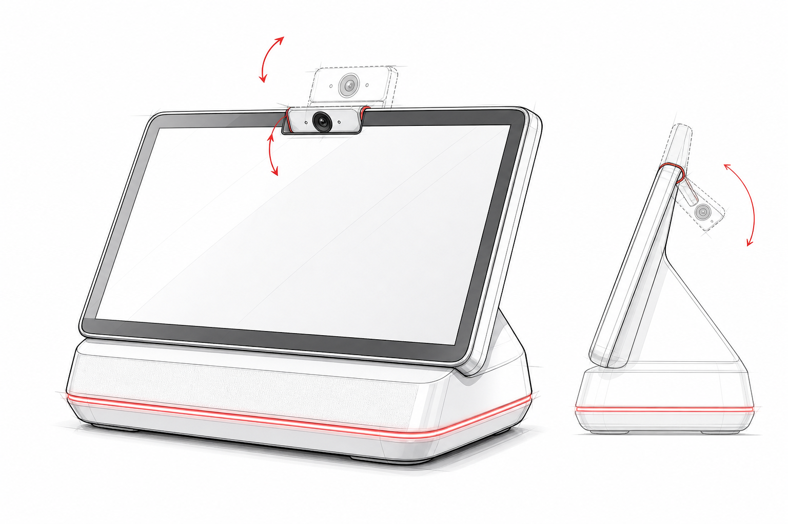
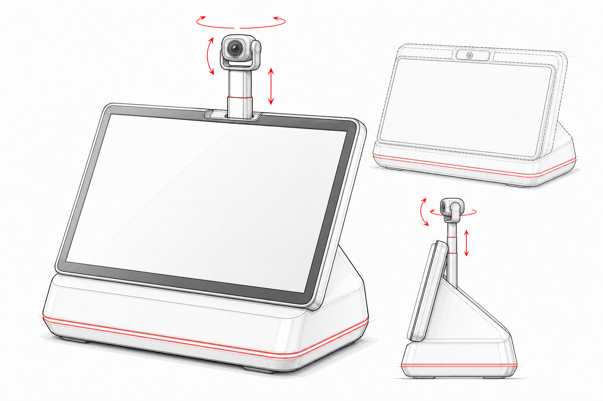
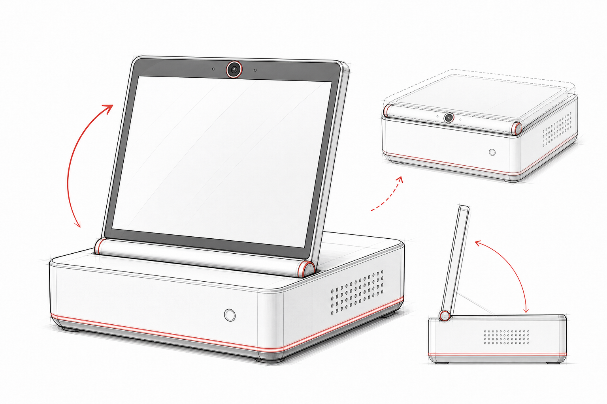
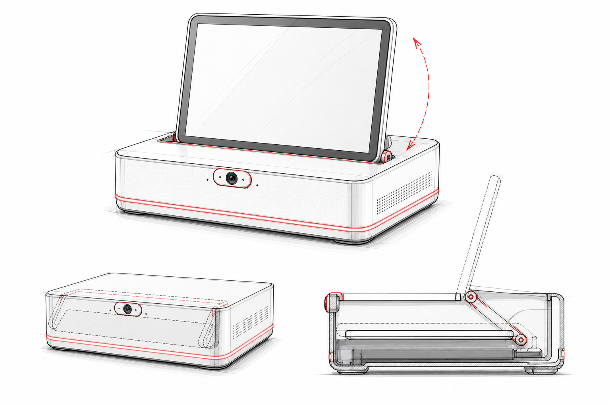
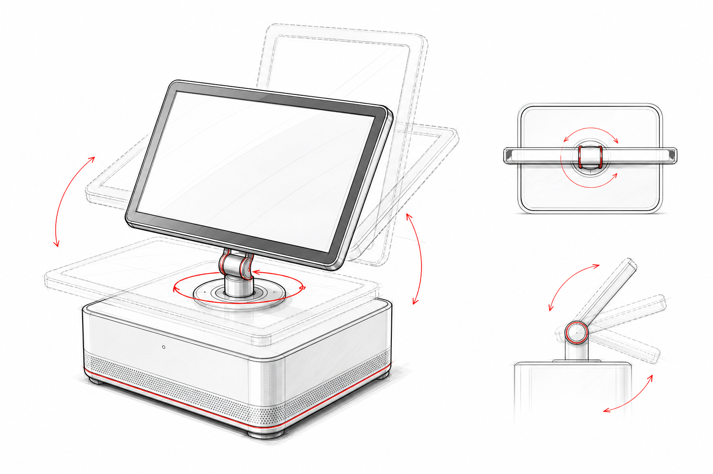
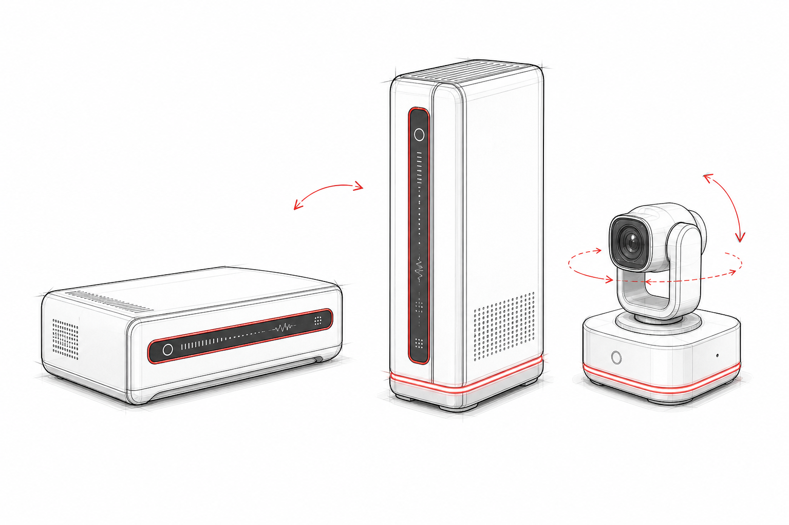
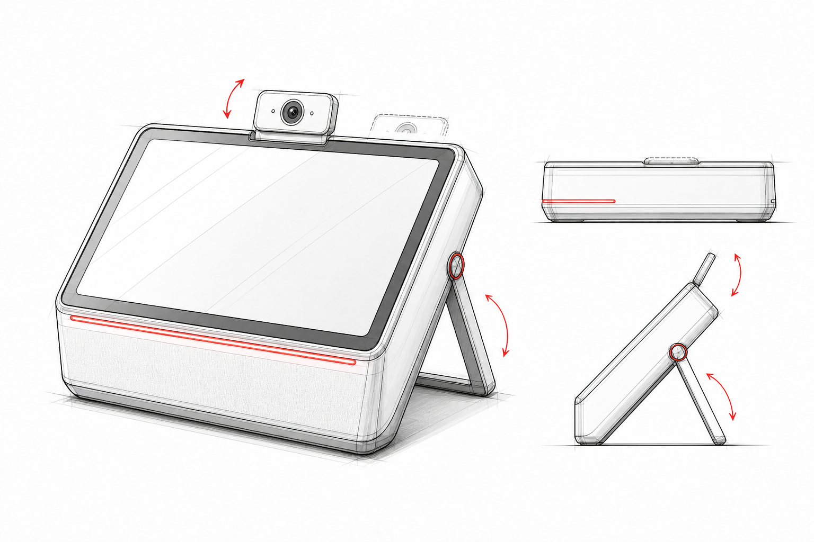
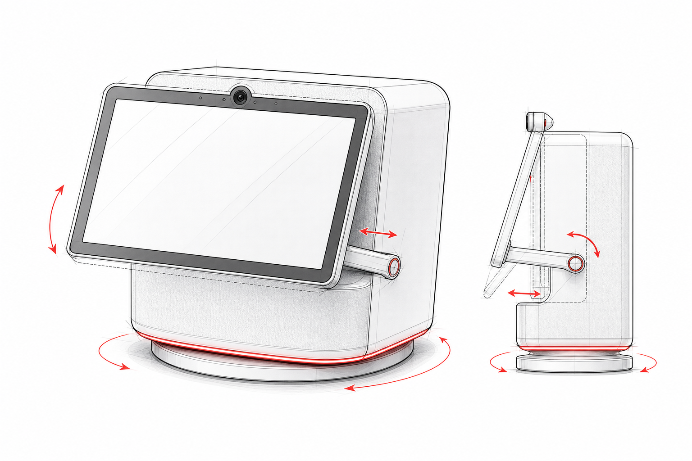

零屏幕机构 = 全场成本与可靠性最优;摄像头单轴翻转是三视野约束的最便宜解(上翻看人/白板,下翻看桌面);底部光环 360° 可读。整体与调研推荐的「灯塔」基线几乎重合,量产路径最短。
屏幕固定倾角对使用者身高/坐姿敏感——样本中固定斜面全部是 15–30°,对站姿俯视和沙发仰视都不友好;屏幕常年裸露无收纳态;摄像头翻下看桌面时就看不到人脸,三视野是「分时」不是「同时」(视频会议+看白板场景会打架)。

唯一能同时满足三视野「任意指向」的方案;而且「缩回=物理消失」是比滑盖更强的隐私语言——Agent 设备的信任痛点被机构本身回答了,潜望起降还自带产品人格(抬头=在听)。
伸缩 + 双轴云台 = 8 案中摄像头机构成本最高(两个微型电机+升降,BOM 估 +$15–25);细杆上的摄像头在触屏操作震动下会晃;升降孔进灰;跌落测试是噩梦。调研样本中没有任何量产先例(最接近的是安防云台,不是桌面消费品)。

与 2024–26 行业收敛完全一致(G-Flip / Miniproca / AM01S 全是这个结构,规律 04/05):合拢=收纳保护、顶面平整可堆叠、翻起角度即视角调节。铰链参数有现成工程基线(0–90°、摩擦扭矩轴、FPC 过轴 2 万次)。四个约束里它天然答对三个半。
屏幕翻起后盒顶被屏占据,那一面不能再放东西;5–7″ 屏合拢后盒子 footprint 由屏决定(≥7″ 屏 → 盒长 ≥160mm);翻起状态屏幕吃正面碰撞。

收纳态最完整:屏幕完全藏进机身,合上就是一块干净的方砖,运输/防尘/防窥全解;屏幕起于后缘,腾出的前半顶面可以复用(Qi 充电板 / 放手机,ViewDock 已验证);摄像头在前不被屏挡,视线成立。
触控人机是真问题:屏幕立在盒子后缘,手指要跨过 140–175mm 的机身去点 5–7″ 屏,悬臂触控 + 手臂正好经过顶面出风区;屏幕离用户远了一个盒深,5″ 屏的触控目标变小。内藏式滑槽+铰链复合机构比案 3 贵一档,防尘唇条、屏幕升起限位都要做。调研中没有任何量产品用后缘铰链触屏——不是没人想到,是人机不过关。

横竖屏切换对 Agent 对话流(竖)/ 视频(横)确实有真实价值;单柱造型有辨识度,「屏幕会转」的剧场感强。
单点双轴铰链 + 触控 = 物理矛盾:手指按屏幕角落时,力臂全部变成单柱上的扭矩,屏幕会点头/摆头——Lenovo 敢做是因为 14″ 屏用电机锁死姿态且整机 $1,649,还不指望你频繁戳它;5–7″ 触控屏恰恰是被频繁戳的。手动版晃、电机版贵(参考调研风险①),两头不讨好。转轴还要过 FPC(显示+触控+摄像头),单点过线可靠性差。

全场唯一「堆叠原生」方案:屏幕在侧面,盒子叠起来时每层屏幕都可见——多节点状态一目了然,这是其他 7 案都做不到的(它们的屏都在顶面,叠即遮)。独立云台摄像头是三视野的完美解,还能放到白板正对面。
与约束①冲突:侧面(盒厚 ~50mm)放不下 5–7″ 常规比例触控屏,只能放窄条;立起来当塔用时又不能叠了,两个姿态互相打架。独立摄像头=第二台设备:供电、配对、桌面走线、丢失,产品完整性被拆散(调研中 Violoop 之所以做成一体,就是为了零部署)。

用整机支架代替屏幕铰链来调视角——机构从「精密铰链」降级为「粗壮支架」,便宜且抗造;摄像头翻转继承案 1 的优点;平放时是低调的盒子,立起时是终端,一物两态。
整机立起=散热姿态、端口出线、脚垫受力全部换方向,风道要按两种姿态双重设计(调研规律 08:65W 级全靠固定风道);立起时插着的线缆被抬离桌面产生应力;立起状态不可堆叠、平放状态屏幕朝天反光。屏下单向灯带弱于环形(只有正面可读)。

桌面存在感最强:旋转=朝向你,是 Agent「有身体」的最直接表达;屏幕平贴机身+按需伸出 tilt,收纳与人机兼顾;底座光环与旋转组合的「表情」空间大。
旋转底座在最底下,与堆叠约束物理互斥:底座要转,上面却要叠 1–4 台算力盒——电机(或手动转盘)得带着整塔的质量和线缆转,线缆缠绕要上滑环,成本与故障率飙升;Echo Show 10 单机尚且要求 38×25cm 旋转净空(调研风险①),一塔更甚。屏幕「伸出+tilt」又是一套独立机构,全案机构数=8 案之最。
1–5 分。C1 屏幕约束达成 / C2 摄像头三视野 / C3 灯带表达 / C4 堆叠兼容 / C5 结构成本与可靠性(高分=低风险)/ C6 收纳与保护 / C7 触控稳定性。案 3 的 C2 按「摄像头移至屏上缘」修正后计。
| 方案 | C1 屏约束 | C2 三视野 | C3 灯带 | C4 堆叠 | C5 成本可靠 | C6 收纳 | C7 触控稳定 | 总分/35 | 判级 |
|---|---|---|---|---|---|---|---|---|---|
| 案 1 固定倾角+翻转摄像头 | 5 | 3.5 | 5 | 4 | 5 | 2 | 5 | 29.5 | 推荐 |
| 案 2 伸缩云台摄像头 | 5 | 5 | 5 | 4 | 2.5 | 3 | 5 | 29.5 | 高配变体 |
| 案 3 前缘铰链翻起屏 | 5 | 4 | 4 | 5 | 4 | 4 | 4 | 30 | 推荐 · 最高分 |
| 案 4 后缘铰链内藏屏 | 5 | 4 | 4 | 4 | 3 | 5 | 2.5 | 27.5 | 可改 |
| 案 5 单点旋转+翻转 | 5 | 3 | 3 | 3 | 2 | 4 | 2 | 22 | 慎用 |
| 案 6 侧条屏+独立云台 | 2.5 | 5 | 4 | 5 | 3 | 4 | 4 | 27.5 | 可改 · 拆点复用 |
| 案 7 整机支架立起 | 5 | 4 | 3 | 3 | 4 | 2 | 4 | 25 | 并入案 1 |
| 案 8 旋转底座 Echo 式 | 5 | 3.5 | 5 | 1.5 | 2.5 | 4 | 3.5 | 25 | 慎用 · 与④冲突 |
对照形态学矩阵,8 案集中在「屏幕绕水平轴转动 / 整机姿态变化」两条线上;以下方向尚未出现在你的草图里 —— 前 4 个值得认真对待,后 2 个是激进项。
① 主线 = 案 3 × 案 1 融合 + G4 架构:前缘铰链翻起屏(案 3 结构)+ 摄像头装在屏幕上边框且自带下翻档位(案 1 的翻转摄像头嫁接过来,翻到底=物理遮挡),底部 360° 灯环,整体作为「头部模组」;算力盒无屏、同 footprint 向下堆叠。四条约束全部闭环。
② 固定角 vs 铰链,用样机定生死:案 1(固定楔角)和案 3(铰链)的真正分歧只有一个变量——视角可调性值不值一套铰链的钱。打两个 1:1 快速样机做人因测试(坐/站/沙发三姿态),数据说话。
③ 案 2 留作 Pro SKU:伸缩云台摄像头外观兼容主线,高配款替换;「缩回=隐私」的叙事值得保留。
④ 案 6 拆件复用:侧面长条屏降级为算力盒的「节点状态条」(每台盒子标配,叠起来每层可见);独立云台摄像头改为选配件。
⑤ 案 5 / 案 8 不进首发:单点双轴铰链与旋转底座都是电机级复杂度,和 5–7″ 触控、可堆叠两条约束正面冲突;案 8 的「旋转朝向你」由 G5 头部阻尼转环低成本实现。
下一步(EVT 前):翻转摄像头 3 档定位的手感样件 / 铰链扭矩与触控晃动测试(戳屏角 100 次不位移)/ 头模组+2 层算力盒的热仿真 / 6″ 档屏幕供应链询价(5″ 与 7″ 为主,6″ 可能要开模)。